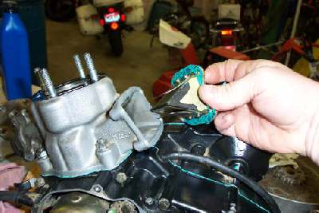
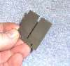
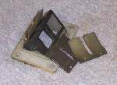
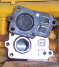

|
 ¶ Reed Valves are simply a one way valve. They let air or liquid pass one way and not the other. We usually see them in the intake track of a two stroke engine. When the piston of a two stroke engine goes down it compresses the fuel mixture in the crankcase and this can push some of the mixture back out the carburetor. A Reed Valve in the carb manifold will let the fuel mixture in but not out. This allows bigger ports be used. Reed Valves can be found on Four Stroke engines too, such as the 1982 XR500 Honda. This was to help the engine carburetion. I guess it was running too rich. I read somewhere that they call this "Intake Reversion". Supposedly the theory was that because of big cam lifts and long cam timing duration, the fuel mixture got too rich. Seems it got blown back out through the carburetor and then sucked in again. Going through the carburetor twice makes the mixture too rich. I'm not to sure how much of a problem this actually was but I guess Honda figured a Reed Valve would help.
  If a reed is broken or stuck closed the bike will be very hard to start if it will start at all. They are normally quite reliable... at least I haven't run across very many broken ones.  
Copyright © 1999-2004 dansmc.com. All rights reserved. |